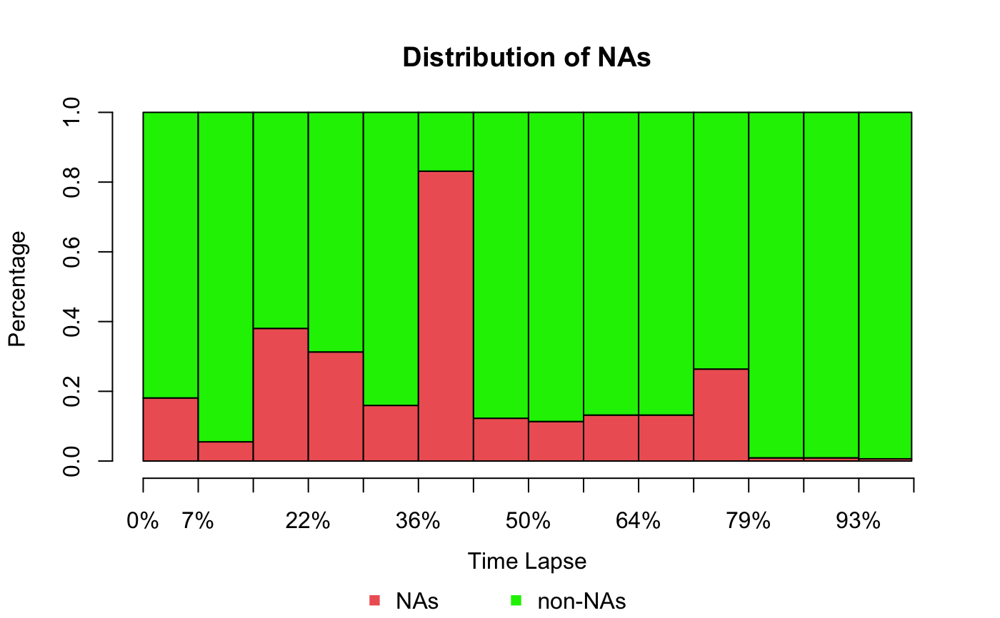

Visualize Distribution of Missing Values (Barplot)
Source:R/plotNA.distributionBar.R
plotNA.distributionBar.RdVisualization of missing values in barplot form. Especially useful for time series with a lot of observations.
plotNA.distributionBar(x, breaks = nclass.Sturges(x), breaksize = NULL, percentage = TRUE, legend = TRUE, axis = TRUE, space = 0, col = c("indianred2", "green2"), main = "Distribution of NAs", xlab = "Time Lapse", ylab = NULL, ...)
Arguments
| x | Numeric Vector ( |
|---|---|
| breaks | Defines the number of bins to be created. Default number of breaks is calculated by |
| breaksize | Defines how many observations should be in one bin. The required number of overall bins is afterwards calculated automatically. This parameter if used overwrites the breaks parameter. |
| percentage | Whether the NA / non-NA ration should be given as percent or absolute numbers |
| legend | If TRUE a legend is shown at the bottom of the plot. A custom legend can be obtained by
setting this parameter to FALSE and using |
| axis | If TRUE a x-axis with labels is added. A custom axis can be obtained by
setting this parameter to FALSE and using |
| space | The amount of space (as a fraction of the average bar width) left before each bar. |
| col | A vector of colors for the bars or bar components. |
| main | Main title for the plot |
| xlab | Label for x axis of the plot |
| ylab | Label for y axis of plot |
| ... | Additional graphical parameters that can be passed through to barplot |
Details
This function visualizes the distribution of missing values within a time series.
In comparison to the plotNA.distribution function this is not done by plotting
each observation of the time series separately Instead observations for time intervals are represented as bars.
For these intervals information about the amount of missing values are shown. This has the advantage, that also
for large time series a plot which is easy to overview can be created.
See also
Examples
#Example 1: Visualize the missing values in tsNH4 time series plotNA.distributionBar(tsNH4)#Example 2: Visualize the missing values in tsHeating time series plotNA.distributionBar(tsHeating, breaks = 20)